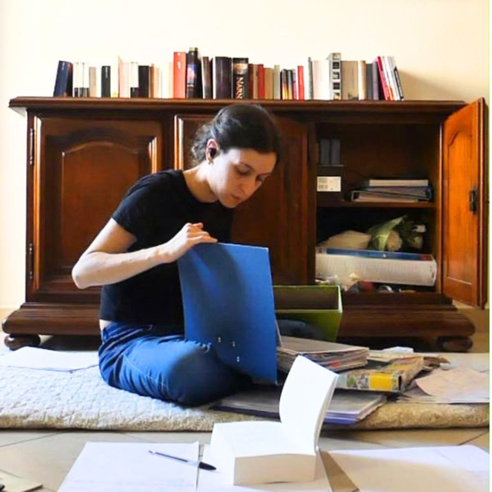

Vorresti scrivere un romanzo ma non riesci a trovare un’idea? Ne hai appena finito uno e la tua mente si rifiuta di elaborare altre idee per il prossimo? L’idea che avevi qualche settimana fa non ti attira più come prima?
Ci sono diversi metodi per rimediare al problema, ma ancora prima bisogna mettere bene a fuoco la prospettiva con cui guardiamo l’ideazione di storie. All’inizio pensavo che le idee venissero da un processo conscio, per cui facevo la fatica di “andare a caccia di storie” pensando attivamente a possibli trame. Più tardi ho cominciato a intendere il processo più come un “gettare le reti”, cioè vivere la realtà quotidiana con un occhio e un orecchio sempre aperti a intercettare non idee, ma suggestioni ed elementi che mi colpiscono. Dal lavoro su quelle prime suggestioni sono scaturite non solo idee molto più definite rispetto a quelle di prima, ma anche in numero maggiore di quante io riesca a convertire in romanzi.
Ok, ora che ho tolto di mezzo la filosofia vediamo un po’ di consigli pratici – una base per chi è alle prime armi e un ripasso per chi è un po’ più avanti col lavoro – :
1 Il cestino delle suggestioni: portate sempre con voi un taccuino dove buttar giù subito le suggestioni che vi colpiscono durante la giornata. Se preferite potete usare delle app per prendere appunti sul vostro smartphone, ma è importante avere sempre un supporto a portata di mano. La prossima suggestione è sempre dietro l’angolo e dovete essere pronti a fissarla immediatamente, senza cadere nella trappola del “lo scrivo dopo”. Farete la figura del nerd folle? Dell’apprendista giornalista? Non fa niente, i vostri romanzi sono più importanti di quello che pensa la gente di voi. Il vostro taccuino vi tornerà utile in seguito, quando rileggerete – io lo rileggo una volta ogni due mesi – le vostre note e inizierete a sottolineare quelle che ancora vi colpiscono. Da lì potrete iniziare a costruire un personaggio, un’ambientazione o un abbozzo di trama.
2 Aprire bene occhi e orecchie: osservate la realtà che vi circonda. Forse vi colpirà un dettaglio nell’abbigliamento di un collega, alcuni spezzoni di conversazione con gli amici o aneddoti di fatti accaduti vi rimarranno in mente. Alle volte, Hemingway se ne stava da solo in un angolo di un bar ad osservare la vita che scorreva intorno a lui. Lui lo faceva per rendere le sue descrizioni più verosimili, ma fermandovi e guardando per un po’ la realtà senza interferire potreste anche trovare delle suggestioni interessanti.
3 Adottare un approccio equilibrato: non cercate per forza idee “che non siano mai state scritte prima d’ora” – le storie sono più o meno sempre quelle, è il come sono raccontate che cambia tutto -, ma non escludete nulla a priori. La vostra nuova storia potrebbe venir fuori da un sogno che avete fatto – mi viene in mente l’incubo di Bram Stoker che diede vita a Dracula -, da una conversazione tra amici, da un fatto di cronaca, da qualcosa che è accaduto a voi o a qualcun altro, dal guardare una situazione del vostro passato con occhi nuovi, dalla trama di un altro romanzo che avete letto, da un libro che non è neanche fiction, da un tema che vi sta particolarmente a cuore.
4 Il classico “scrivi di quello che sai”: se tutti scrivessimo solo di quello che sappiamo non esisterebbe la fantascienza, mi direte. E di sicuro non bisogna essere un killer per davvero per scrivere un thriller. Verissimo, ma almeno agli inizi e mentre si impara ad armeggiare i ferri del mestiere è meglio andare sul sicuro. Rubacchiate senza timore dal vostro passato, studiate il vostro ambiente di lavoro come contenitore in cui ambientare storie, riflettete sulle dinamiche relazionali tra le persone, approfondite aspetti del vostro campo di conoscenze. Le suggestioni e le idee non solo saranno abbondanti, ma si legheranno bene tra loro e vi renderanno più semplice il compito di elaborare una trama.
5 Esercizi di scrittura: se ne trovano a bizzeffe su internet, fateli a prescindere per migliorarvi e tenere la vostra creatività in esercizio ma chissà, tra tutti i racconti che scriverete è possibile che un personaggio catturi a tal punto la vostra immaginazione da farvi decidere di espandere. A me questo non è ancora successo, ma il futuro è ricco di sorprese…
Dimostrazione pratica: dove ho trovato le idee per i miei romanzi
Affinità alchemiche: il testo più difficile che ho scritto finora è anche quello con la genesi più fortuita e assurda. Un giorno, vagabondando tra le bancarelle a mercato, trovai una copia del libro “I volti dell’amore” di Nadia Fusini. Lo comprai, lo portai a casa, lo lessi tutto d’un fiato e rimasi folgorata dal dramma teatrale “Peccato che fosse puttana” di John Ford riportato dall’autrice nel capitolo dedicato all’incesto. Non c’era verso, dovevo scrivere anche io una storia d’amore che fosse diversa da tutte le altre proprio perché il problema non veniva dal’esterno della coppia ma dall’interno, dall’impossibilità stessa di amare il fratello. In quanto a scrittura creativa, questa probabilmente è stata la scelta di idea più azzardata che io abbia mai fatto, di sicuro mi ha creato un sacco di problemi ma Affinità alchemiche è stato il testo che più di tutti mi ha fatto da palestra e a cui sono più legata. Affinità alchemiche è la dimostrazione pratica di quello che ho scritto poco fa, cioè non temere di scrivere quello che ci affascina e non escludere nessuna suggestione.
Whiskey stelle inchiostro 3: la mia quadrilogia ha avuto una genesi del tutto insolita e la prima idea non è arrivata in relazione al primo volume ma al terzo. La primissima suggestione è stata la lettura di un passo del poema “La casa della fama” di Chaucer – sì, solo io leggevo ‘sta roba all’università -. Da subito mi è venuta in mente la scena di uno scrittore a confronto con maestri letterari del passato. Suggestione assurda? Idea poco praticabile? Forse, ma non l’ho esclusa perché mi affascinava e quando qualcosa ti affascina ti senti bene a scriverlo. Ho scritto la scena che avevo immaginato, mi sono chiesta chi fosse lo scrittore protagonista e ho finito per inventare, dettagliare la figura di Andrew e andare a ritroso nel suo passato, collegando altre idee che avevo avuto per altri romanzi che non pensavo neanche avrebbero finito per legarsi insieme.
Whiskey stelle inchiostro 1: nell’anno in cui stavo raccogliendo le idee per il personaggio di Andrew, il caso Elena Ferrante e la sua identità nascosta andava su tutti i giornali e appassionava i lettori. Mi sono chiesta cosa spingesse uno scrittore all’anonimato e da lì è nata la figura di Francesco, il maestro di Andrew. Alcune situazioni del romanzo, invece, le ho rubate da una mia breve esperienza estiva di lavoro in hotel, condite con una sana dose di immaginazione e da suggestioni e aneddoti annotati nel famoso taccuino. Dimostrazione pratica che un romanzo non è frutto di un’idea sola ma di più elementi che si amalgamano insieme.

Whiskey stelle inchiostro 2: è il testo forse più autobiografico che ho scritto, alcuni elementi li ho presi direttamente dal mio passato e di nuovo conditi – stavolta pesantemente – con parecchia immaginazione e molti degli appunti del taccuino. A dimostrazione che è più semplice scrivere ciò che si conosce e che in ogni caso qualcosa di te finirà sempre nel testo.
Whiskey stelle inchiostro 4: questo romanzo non era neanche in programma, diciamo che mi si è imposto da solo. Arrivata al terzo volume della trilogia avevo diversi personaggi ben definiti, alcune linee di trama che potevano essere ancora sviluppate e un personaggio in particolare – Tom, il fratello minore di Andrew – a cui mi ero affezionata particolarmente per via del carattere. Proprio dal suo carattere scanzonato e menefreghista – visibile già nel terzo romanzo della trilogia – è scaturita tutta la trama. Talvolta delle belle idee possono scaturire anche da personaggi minori.
A questo punto non mi resta che domandarvi: da dove è arrivata l’idea per il vostro primo romanzo? Oppure, se non avete ancora scritto niente, quante suggestioni avete già raccolto?
Buon lavoro e…alla prossima!